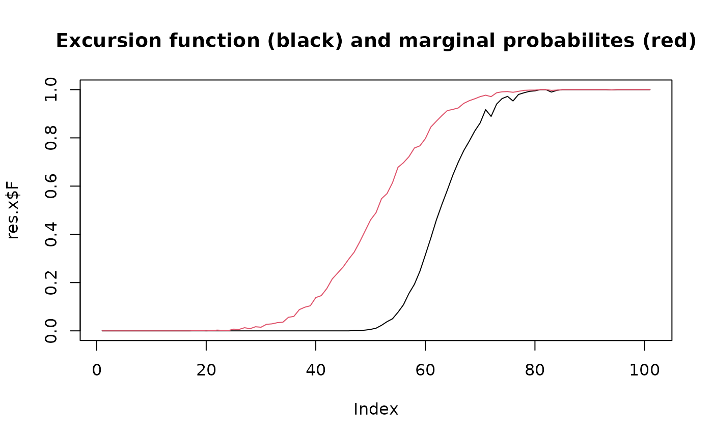

Excursion sets and contour credible regions using Monte Carlo samples
Source:R/interface.mc.R
excursions.mc.Rdexcursions.mc is used for calculating excursion sets, contour credible
regions, and contour avoiding sets based on Monte Carlo samples of models.
Usage
excursions.mc(
samples,
alpha,
u,
type,
rho,
reo,
ind,
max.size,
verbose = FALSE,
prune.ind = FALSE
)Arguments
- samples
Matrix with model Monte Carlo samples. Each column contains a sample of the model.
- alpha
Error probability for the excursion set.
- u
Excursion or contour level.
- type
Type of region:
- '>'
positive excursions
- '<'
negative excursions
- '!='
contour avoiding function
- '='
contour credibility function
- rho
Marginal excursion probabilities (optional). For contour regions, provide \(P(X>u)\).
- reo
Reordering (optional).
- ind
Indices of the nodes that should be analysed (optional).
- max.size
Maximum number of nodes to include in the set of interest (optional).
- verbose
Set to TRUE for verbose mode (optional).
- prune.ind
If
TRUEandindis supplied, then the result object is pruned to contain only the active nodes specified byind.
Value
excursions.mc returns an object of class "excurobj" with the
following elements
- E
Excursion set, contour credible region, or contour avoiding set.
- G
Contour map set. \(G=1\) for all nodes where the \(mu > u\).
- M
Contour avoiding set. \(M=-1\) for all non-significant nodes. \(M=0\) for nodes where the process is significantly below
uand \(M=1\) for all nodes where the field is significantly aboveu. Which values that should be present depends on what type of set that is calculated.- F
The excursion function corresponding to the set
Ecalculated for values up toF.limit- rho
Marginal excursion probabilities
- mean
The mean
mu.- vars
Marginal variances.
- meta
A list containing various information about the calculation.
References
Bolin, D. and Lindgren, F. (2015) Excursion and contour uncertainty regions for latent Gaussian models, JRSS-series B, vol 77, no 1, pp 85-106.
Bolin, D. and Lindgren, F. (2018), Calculating Probabilistic Excursion Sets and Related Quantities Using excursions, Journal of Statistical Software, vol 86, no 1, pp 1-20.
Author
David Bolin davidbolin@gmail.com and Finn Lindgren finn.lindgren@gmail.com
Examples
## Create mean and a tridiagonal precision matrix
n <- 101
mu.x <- seq(-5, 5, length = n)
Q.x <- Matrix(toeplitz(c(1, -0.1, rep(0, n - 2))))
## Sample the model 100 times (increase for better estimate)
X <- mu.x + solve(chol(Q.x), matrix(rnorm(n = n * 1000), nrow = n, ncol = 1000))
## calculate the positive excursion function
res.x <- excursions.mc(X, alpha = 0.05, type = ">", u = 0)
## Plot the excursion function and the marginal excursion probabilities
plot(res.x$F,
type = "l",
main = "Excursion function (black) and marginal probabilites (red)"
)
lines(res.x$rho, col = 2)
